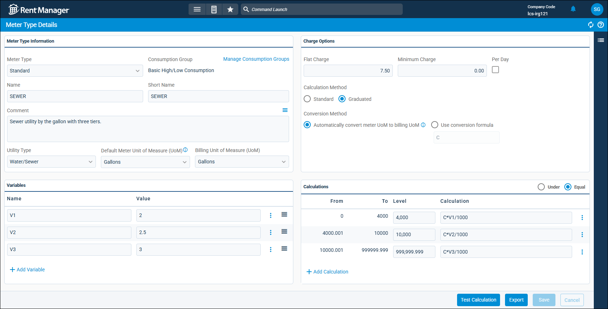
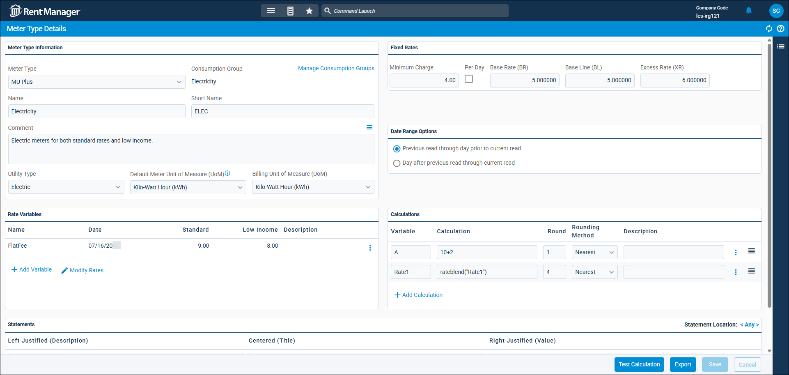
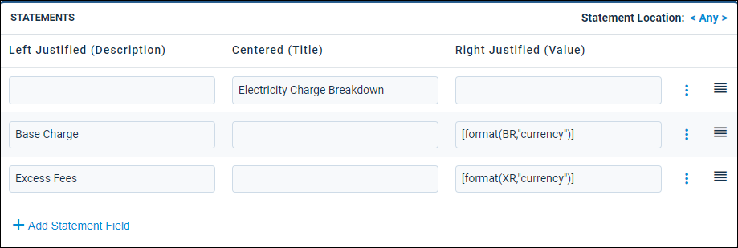
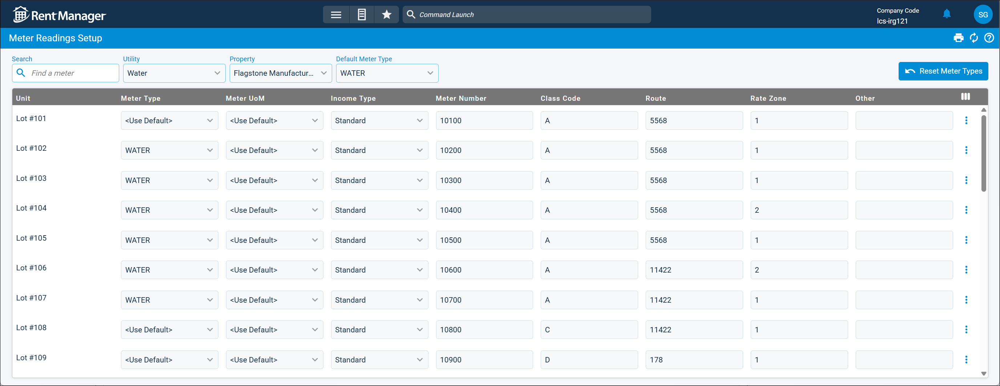
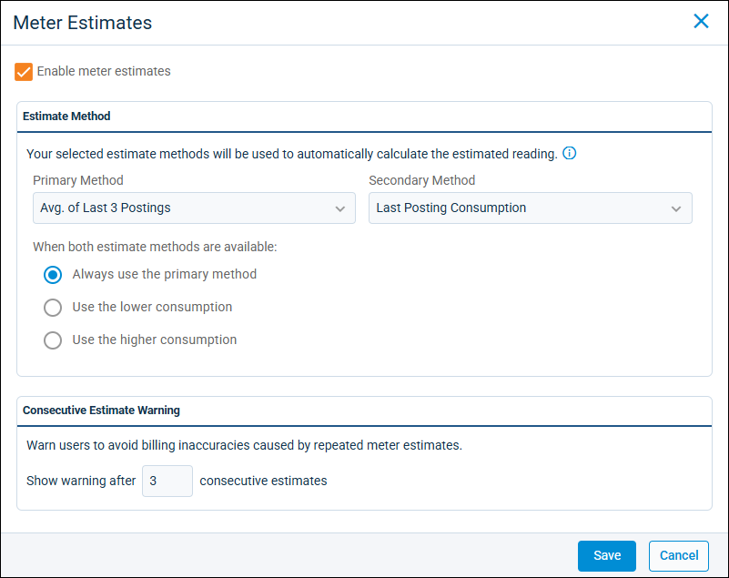

Source: https://rmxhelp.rentmanager.com/Topics/Express/KB/MU-Metered-Utilities-Set-Up.htm
Set Up Metered Utilities
The Metered Utilities (MU) tool allows you to bill tenants for their usage of utilities such as gas, electric, water, and sewage. Every month or billing period, individual meter readings can be entered in Rent Manager and the utility consumption charges are calculated and billed to the associated tenant(s). Meter readings can be entered manually, via mobile devices or scanners, or through file imports.
The Metered Utilities tool is most useful to you if you meet any of the following conditions:
-
You have utility meters or measure utility consumption or usage.
-
You charge tenants based on their utility consumption.
-
City, state, or federal law requires you to charge tenants based on consumption.
This topic guides you through the process of setting up Metered Utilities in Rent Manager by creating utilities and meter types, and then entering meter readings.
More Information
Metered Utilities is a powerful tool, but may not apply to some business setups. If you charge tenants a flat rate that does not change between billing periods, or a property-wide bill that divides the total amount between tenants, then you should instead use the ratio utility billing system (RUBS) method. RUBS allows you to divide charges among tenants in Rent Manager based on factors such as occupancy, unit size, the number of bedrooms and bathrooms, and more, without the need for submeters. For more information, refer to Set Up RUBS.
Step 1: Create Utilities
Related Privileges
| Group | Privilege | Column |
|---|---|---|
| Utilities | Metered utilities | Enabled |
| Utility information | Add, View |
For more information, refer to Control User Access.
The first step to setting up your Metered Utilities is to add each type of utility you track into Rent Manager, such as gas, water, and so on. Additionally, you need to establish the charge type to use when billing for each utility, as well as which properties use each utility.
To create your utilities, do the following:
-
Go to
 arrow_forward Services arrow_forward Metered Utilities arrow_forward Utilities.
arrow_forward Services arrow_forward Metered Utilities arrow_forward Utilities.
The Utilities page displays. -
At the top of the page, click
 Add Utility.
Add Utility.
The Add Utility pop-up displays. -
In the Utility Information tile, enter the following information:
Field Description Charge Type
The charge type to use when charging the tenants for the selected utility.
Properties
Select the properties at which this utility is available.
Warning
Once a property is linked to a utility, it cannot be unlinked. This preserves the utility's historical records for legal purposes, so be sure to link the correct properties only.
More Information
Only properties to which you have access display. Your access to properties can be managed from your user account or on the property's details page. For more information, refer to Limit Access to a Property.
Source Utility for Readings
If this utility uses the same meter as an existing utility, select the other utility from the drop-down list.
For example, water and sewer are often read from the same meter even though they have separate calculations. If you create a sewer utility and select Water as the Source Utility for Readings, tenant readings from the water meter are duplicated in the sewer meter readings.
If this utility has its own dedicated meter that does not measure another utility, leave this field blank.
Utility Name
The name of the utility as it displays in Rent Manager (e.g., Water, Sewer, Duke Electric, and so on).
-
In the Contact Information tile, enter the utility company's contact information into the available fields described below.
Field Description Email
The primary email address used for correspondence with the utility company contact.
Name
The name of the primary contact at the utility company.
-
In the Addresses tile, enter the address(es) for the utility company. Check Default for the address you wish to use in reports.
-
In the Comment tile, add any additional notes or important information regarding this utility. This is for internal reference when viewing your list of utilities and some reports.
-
In the Phone Numbers tile, enter any relevant phone numbers for the property. The available columns are described below.
Column Description Default
Check to set this phone number as the contact to use in reports and other areas of Rent Manager that pull the utility company's phone number. Only one default number can be selected for the utility.
Extension
If applicable, the extension that must be dialed for this phone number.
Name
The name of each phone number type that currently exists in Rent Manager for utilities.
Number
The full ten-digit phone number of the associated phone number type listed in the Name column.
T (Is Text Ready)
Check to mark the phone number as text-enabled, meaning the number can receive text messages.
-
Click Save & New to finish creating the utility and refresh the pop-up to add another. Otherwise, click Save & Close to create the utility and close the pop-up.
More Information
If you track the same utility for multiple utility companies, you should create a separate utility in Rent Manager for each company, as they have different contact information, may need to use a different charge type, and apply to different properties.
Step 2: Create Meter Types
Related Privileges
| Group | Privilege | Column |
|---|---|---|
| Utilities | Metered utilities | Enabled |
| Meter types | Add, View, Edit |
For more information, refer to Control User Access.
The next step is setting up the calculations for each type of meter that you use to measure utilities. There are two meter types in Rent Manager: Standard and MU-Plus.
Standard meter types are used to calculate utility charges with fixed consumption ranges and utility rates, while Metered Utilities Plus provides a more customizable way to calculate utility-consumption charges with blended rates, medical/income discounts, and more detailed usage statements.
To add a meter type, do the following:
-
Go to
arrow_forward Services arrow_forward Metered Utilities arrow_forward Meter Types.
The Meter Types page displays. -
At the top of the page, click
Add Meter Type.
The Add Meter Type pop-up displays. -
Enter the following information:
Field Description Copy From
If you have already created a meter type and need to make another meter type that shares much of the same information, you can select an existing meter type from the drop-down list to create an exact copy of that meter type that can be edited.
To create a new meter type from scratch, select <None>.
Meter Type
Select whether this meter type uses Standard or MU-Plus calculations.
Standard
Standard meter types are used to calculate utility charges with fixed consumption ranges and utility rates. These meters calculate one charge based on the total consumption, which can be a tiered rate.
MU-Plus
MU-Plus provides a more customizable way to develop meter types that calculate tenant billing for utility consumption. These meter types can do blended rates, medical/income discounts, and virtually any kind of complex billing calculation. Furthermore, Metered Utilities Plus provides more transparent usage statements to tenants.
You may need to use a MU-Plus meter type for the following circumstances:
-
If you need to perform complex calculations like rounding, rate blends, if statements, min/max, and per day fees.
-
If you have low-income or medical tenants who qualify for billing discounts.
-
If you have different rate zones, meaning tenants in different locations pay different amounts.
-
If you are required by law to provide detailed usage statements to tenants that itemize the charge into its smaller components.
Name
The full unique name for this meter type, such as Standard Water, Electric (Medical), or Gas - Dayton.
Short Name
The abbreviated name for the meter type (e.g., WATER, Elec-MED, DAYTONGAS) to use internally in Rent Manager, such as in reports like Utility Listing.
-
-
Click Save & New to finish creating the meter type and refresh the pop-up to add another. Otherwise, click Save & Close to create the meter type and close the pop-up.
-
Edit the information on the details page for this meter type. The details page of the meter type varies depending on whether it uses Standard or MU-Plus calculations. Refer to the headings below for more information.
Standard Meter Type

Standard meter types are used to calculate utility charges with fixed consumption ranges and utility rates. These meters calculate one charge based on the total consumption, which can be a tiered rate.
To edit a standard meter type, do the following:
-
In the Meter Type Information tile, the information you entered during meter creation populates by default. Enter information into the additional available fields.
Field Description Comment
Additional context about this meter type, such as when to use it.
Consumption Group
The meter type's assigned consumption group, which sets ranges for your meter readings to determine if they are too high or too low. This allows you to quickly find exceptions or errors and improve the reporting process. Each meter type can be assigned only to one consumption group.
By default, <None> displays when adding a new meter type.
More Information
Consumption groups cannot be assigned from this page and are instead assigned to meter types from the Manage Consumption Groups pop-up. To create a consumption group or assign a group to this meter type, click Manage Consumption Groups. For more information, refer to Manage Metered Utilities High/Low Settings.
Utility Type
The type of utility that best categorizes this meter type: Water/Sewer, Gas, Electric, or Other. This determines the options you can select for units of measure (UoM) used to gauge and charge the utility on this meter type.
If you select an option in this field, the fields below become available. These fields allow a quick conversion for your calculations if this meter type measures in one UoM but billing uses a different UoM.
Billing Unit of Measure (UoM)
The unit of measure used for billing to calculate the amount owed for the utility usage.
Default Meter Unit of Measure (UoM)
The unit of measurement used to calculate the usage amount for this meter type.
-
In the Charge Options tile, enter the following information:
Field Description Calculation Method
How the consumption charges are totaled based on the Calculations section: Standard or Graduated.
Standard
Calculates the charge based on the total consumption of a utility using a single tier.
For example, if there are three price tiers for this meter type, and the tenant's consumption total falls under the second tier's range, then the tenant's entire consumption is calculated using the price established on the second tier.
The calculation for this charge would be the following:
Charge = Tier 2 Calculation
Graduated
Calculates one charge based on consumption used in multiple tiers as specified by the meter type.
For example, if there are three price tiers for this meter type, and the tenant's total consumption total falls under the second tier's range, the consumption amounts are charged for their respective tiers. The tenant's consumption amount that falls under the first tier is calculated using the price set for the first tier. Then the remaining consumption that falls under the second tier is calculated using the price set for the second tier. The total of both these calculations is added together to determine the charge.
Charge = Tier 1 Calculation + Tier 2 Calculation
Conversion Method
How Rent Manager calculates conversions for tenant consumption amounts for billing.
Automatically convert meter UoM to billing UoM
If the meter type has a Default Meter Unit of Measure (UoM) and a Billing Unit of Measure (UoM) set, this option automatically converts the selected default UoM into the selected UoM used for billing.
If those fields are set to <Unassigned>, the calculation is treated as if the default UoM and billing UoM are the same and no conversion is needed.
Use conversion formula
If the unit of measure is the same for both the meter's measurements and the tenant's billing, the formula should be C.
Otherwise, if this meter type uses one unit of measure to track usage but the tenant is billed using another unit of measurement, a Conversion Formula is used to convert meter readings to actual consumption. In formulas, C represents consumption.
For example, if the meter measures in cubic feet, but the tenant is billed in gallons, you would enter a formula of C / 7.481, as there are approximately 7.481 gallons in one cubic foot.
When this Conversion Formula is applied to the consumption unit of the meter, the result (in the measurement of the billing) displays as the Adjusted Consumption in subsequent pages and reports.
Flat Charge
An optional flat dollar amount that does not change between billing cycles and is added to the utility consumption charge. This is often used for service charges or delivery fees.
Minimum Charge
The minimum dollar amount to charge for any utility. If the utility charge is zero or less than the entered amount, this amount is billed instead.
Optionally, check Per Day to multiply the Minimum Charge amount by the number of days in the meter billing period. For example, if the minimum amount is 1, then the minimum charge for December is $31.00, while the minimum charge for September is $30.00 based on the number of days in the months.
-
In the Variables tile, click
 Add Variable to create a new variable to represent one of the rates used in the Calculations tile that can be billed to a tenant.
Add Variable to create a new variable to represent one of the rates used in the Calculations tile that can be billed to a tenant.
A new variable line displays. -
For the new variable, enter the following information:
Column Description Name
The name of the variable, which should begin with a letter (e.g., V1, R2, T04, and so on). Variables may be used in lengthy formulas, so it is best practice to keep the name short.
Value
The numeric value stored in the associated variable. Once the variable is added to a calculation, instead of updating the calculation, update the value of the variable. The calculation automatically updates to account for the new value.
Add additional variables until you have added all possible rates that can be billed to tenants for this meter type.
-
In the Calculations tile header, if you have multiple tiers of consumption, select the option below that matches each tier as listed on your utility bill.
Option Description Equal
Sets the consumption level maximum to be equal to the Level value. For example, a Level of 500 using Under would include 0–500.
Under
Sets the consumption level maximum to be .01 less than the Level value. For example, a Level of 500 using Under would include 0–499.99.
-
In the Calculations tile, enter the following information:
Column Description Calculation
Enter the consumption rate or formula (where C stands for consumption) that represents the amount to charge at the associated Level. You can use:
-
A specific consumption rate, such as C * 0.007. For example, this represents a rate of $7.00 per 1000 units of measurement.
-
A consumption rate that uses a variable you have defined, such as C * V1.
-
A formula that expands on a consumption rate or variable, such as (C * 0.007) * 0.82 + 5.
Level
The maximum consumption level for the first calculation level. Each line is considered a tier when calculating consumption charges (the first line is tier 1, the second line is tier 2, and so on).
By default, a single calculation line populates that covers all consumption amounts. When you edit the value in the Level column, the To column automatically updates to match this information. For example, if you enter a Level of 10, the To column updates to 9.999 or 10, depending on whether you selected Under or Equal in the section header.
-
-
Click
Add Calculation to create a new line for the next calculation level, and enter the associated Level maximum and Calculation. Repeat in ascending order until all consumption levels are added. -
Click Save.
The standard meter type information is updated.More Information
To test your meter type setup and verify it is calculating as needed, click Test Calculation. For more information, refer to Test Utility Charge Calculation.
MU-Plus Meter Type

More Information
Metered Utilities Plus (MU-Plus) is often used to meet legal requirements and can involve complex calculations and Rent Manager scripting knowledge. If you would like to get a quote for the Professional Services team at LCS create your MU-Plus meter types, contact your sales representative at sales@rentmanager.com.
To edit a MU-Plus meter type, do the following:
-
In the Meter Type Information tile, the information you entered during meter creation populates by default. Enter information into the additional available fields.
Field Description Comment
Additional context about this meter type, such as when to use it.
Consumption Group
The meter type's assigned consumption group, which sets ranges for your meter readings to determine if they are too high or too low. This allows you to quickly find exceptions or errors and improve the reporting process. Each meter type can only be assigned to one consumption group.
By default, <None> displays when adding a new meter type.
More Information
Consumption groups cannot be assigned from this page and are instead assigned to meter types from the Manage Consumption Groups pop-up in the Meter Types field. To create a consumption group or assign a group to this meter type, click Manage Consumption Groups. For more information, refer to Manage Metered Utilities High/Low Settings.
Utility Type
The type of utility that best categorizes this meter type: Water/Sewer, Gas, Electric, or Other. This determines the options you can select for units of measure (UoM) used to gauge and charge the utility on this meter type.
If you select an option in this field, the fields below become available.
Billing Unit of Measure (UoM)
The unit of measure used for billing to calculate the amount owed for the utility usage.
Default Meter Unit of Measure (UoM)
The unit of measurement used to calculate the usage amount for this meter type.
-
In the Fixed Rates tile, enter the following information:
Field Description Base Line (BL)
The allotted consumption amount the tenant can use for the specified utility.
Base Rate (BR)
The standard rate for billing the tenant for their consumption of the utility.
Charge Amount = BR (Base Rate) * C (Consumption)
Excess Rate (XR)
The value to be billed if the tenant uses more than the allotted amount established in Base Line (BL).
Minimum Charge
The minimum dollar amount to charge for any utility. If the utility charge is zero or less than the entered amount, this amount is billed instead.
Optionally, check Per Day to multiply the Minimum Charge amount by the number of days in the meter billing period. For example, if the minimum amount is 1, then the minimum charge for December is $31.00, while the minimum charge for September is $30.00 based on the number of days in the months.
More Information
The Minimum Charge is automatically applied to your Calculations section, but Base Rate, Base Line, and Excess Rate simply take your input values and store them to the corresponding variables (BR, BL, and XR). They have no impact until they are scripted into the Calculations section.
-
In the Date Range Options tile, select one of the following:
Option Description Day after previous read through current read
Calculate consumption one day after your previous read date through your current read date.
Previous read through day prior to current read
Calculate consumption from the date of the previous reading through the day before your current read date.
-
In the Rate Variables tile, click
Add Variable to create a new variable, which allows you to store a value to use in the Calculations tile. Typically, these variables consist of the rates and other fees/discounts defined by the utility provider.
A new rate variable line displays. -
For the new rate variable, enter the following information into the available columns:
Column Description Date
The date which this rate variable becomes active.
When a line is added to the rate variable's history, the date on the new line determines when the new values take effect while also preserving an accurate historical record of past values for the rate variable.
Description
An optional explanation of what the variable tracks. Entering descriptions can be useful for making the Metered Utilities Plus meter type more user-friendly.
Low Income
The value of the variable for a low-income tenant.
More Information
When you set up your meters in Rent Manager, you can mark the unit as low income when it has an occupying tenant that qualifies for this discounted rate. For more information, refer to the Step 3: Set Up Meter Readings heading below.
Name
The name defined for each variable. This name can be used as a reference in the Calculations tile.
Standard
The value of the variable for a standard tenant.
Add additional rate variables until you have added variables you will need for your calculations. For more information, refer to Set Up MU-Plus Rate Variables.
-
In the Calculations tile, click
Add Calculation to create a new calculation line. -
For the new calculation, enter the following information:
Column Description Calculation
This is the scripted calculation that is stored in the stated Variable column. You can use scripting in this column to perform simple-to-complex calculations. There are special rules for scripting in this field.
For more information, refer to Scripting.
Description
Optional text to explain the script in the Calculation column and its purpose in the overall formula. It's recommended to use these descriptions to make the meter type calculations more user-friendly.
Round
This rounds the result of the calculation script to the specified decimal place. For example, entering 0 rounds to the nearest whole number, where 2 rounds the value to the nearest hundredth.
Rounding Method
How the calculation results are rounded: Nearest, Down, or Up. Click the drop-downs below for more information.
Nearest
Round the value to the nearest specified decimal place. Values between 5–9 round up, and 1–4 round down.
Down
Always round the value down to the specified decimal place.
Up
Always round the value up to the specified decimal place.
Variable
The result of the Calculation column is stored in this variable name. Once a variable is declared, it can be used in subsequent rows.
Add additional calculation lines until you have added all needed calculations for this meter type. For more information, refer to Set Up MU-Plus Rate Calculations.
-
In the Statements tile header's Statement Location field, specify if you would like the statement summary to always display on the Left, Center, or Right of the statement. Alternatively, select <Any> to have the summary display wherever it is able to fit.
-
In the Statements tile, click
Add Statement Field to add a new line. -
For the new statement line, enter the following information into the available columns:
Column Description Centered (Title)
Enter the title for your tenant statement here.
Left Justified (Description)
List the specific charge breakdowns in this column.
Right Justified (Value)
Enter values and formulas to be calculated on the statement for the associated value in the Left Justified (Description) column.
The format of the statement directly reflects how you enter this information, including any fields left blank in certain columns. For example, the first line may only have a title entered in the Centered (Title) column, while each line below has entries only in the Left Justified (Description) and Right Justified (Value) columns.

-
Click Save.
The MU-Plus meter type is updated.More Information
To test your meter type setup and verify it is calculating as needed, click Test Calculation. For more information, refer to Test Utility Charge Calculation.
Step 3: Set Up Meter Readings
Related Privileges
| Group | Privilege | Column |
|---|---|---|
| Utilities | Metered utilities | Enabled |
| Change current read value and date | Enabled | |
| Change meter type associated with a unit | Enabled |
For more information, refer to Control User Access.
The next step is to do an initial setup of the meters you track, including the type of meter being billed, the meters assigned to each unit, and the previous consumption history for that unit.
To set up your meter readings, do the following:
-
Go to
arrow_forward Services arrow_forward Metered Utilities arrow_forward Meter Readings Setup.
-
At the top, select an option in the following fields:
Field Description Default Meter Type
The meter type that applies to most of the meters at the property. All units with <Use Default> selected in the Meter Type column inherit the selection in this field.
Property
The first property for which to set up meter readings. Only properties assigned to the selected utility display in the drop-down list.
Utility
The first utility you are setting up.
The page populates the list of units at the property.
-
For each unit in the list, enter the following information into the available columns:
Column Description Class Code
A per-tenant, single capital letter for the class, which is typically used for customers who receive medical discounts. For example, M for medical.
This applies only to meters that are using a MU-Plus meter type.
Income Type
The income type assigned to the meter. Standard meters use the baseline utility charge calculation, and Low Income meters allow for a reduced rate based on the tenant.
This applies only to meters that are using a MU-Plus meter type.
Meter Number
The unique meter number for each unit. This may be a serial number or other identification number.
If, on the Utility Detail page, the utility has a defined Source Utility for Readings, this value is inherited from that utility's setup and cannot be edited.
Meter Type
The meter type used to determine the utility charge amount based upon consumption for the associated unit.
Meter UoM
The unit of measurement used to calculate the consumption for this meter type. The options available in this field depend on the selection in the Meter Type column for the meter.
If <Use Default> is selected, the unit of measure selected on the meter type's details page in the Default Meter Unit of Measure (UoM) field is used.
Other, Other 2, etc.
Optional user defined fields that can be used as part of Metered Utilities (MU) scripting.
Rate Zone
An optional comment to define the geographic area.
This applies only to meters that are using a MU-Plus meter type.
Route
A number that represents the order in which this meter is read. The first meter read has a value of 1, the second a value of 2, and so on. This is particularly useful when using rmAppSuite Pro because you can sort the readings by route in the app and the technician can easily take the readings in order.
If, on the Utility Detail page, the utility has a defined Source Utility for Readings, this value is inherited from that utility's setup and cannot be edited.
Unit
The Name of the unit as entered on the unit's details page in the General tile.
-
Click Save.
The meter readings for the selected property and utility are updated. Repeat these steps for each Property and Utility until all meters are set up.
Step 4: Enable and Establish Meter Estimates
Related Privileges
| Group | Privilege | Column |
|---|---|---|
| Utilities | Manage Meter Estimates Settings | Enabled |
For more information, refer to Control User Access.
If you allow estimated readings to be used, the next step is to establish the system defaults for those meter estimates. This includes the estimate methods used to automatically calculate estimated readings and the number of repeated meter estimates allowed before users are warned.
To set up your meter estimates, do the following:
-
Go to
arrow_forward Services arrow_forward  Service Setup arrow_forward Utilities arrow_forward Meter Estimates.
Service Setup arrow_forward Utilities arrow_forward Meter Estimates.
-
Check Enable meter estimates to establish your estimate methods and the number of repeated estimate readings allowed before the Rent Manager user is warned.
-
In the Estimate Method tile, select the Primary Method estimate method used to calculate consumption. If the meter does not have enough data to calculate an estimate based on the primary estimate method, select the Secondary Method used to calculate consumption.
The following estimate methods are available for both Primary Method and Secondary Method fields.Method Description Avg. of Last 3 Postings
Consumption is calculated by the average of your three most recent postings.
Avg. of Last 6 Postings
Consumption is calculated by the average of your six most recent postings.
Last Posting Consumption
Consumption is calculated by your most recent posting.
Similar Posting Last Year
Consumption is calculated based on your posting from the previous year (twelve months).
If both methods have enough data for a valid estimate, one of the following methods is used to calculate consumption.
Method Description Always use the primary method
The method selected in the Primary Method field is used to calculate consumption.
Use higher consumption
The higher of the primary or secondary estimate method is used to calculate consumption.
Use lower consumption
The lower of the primary or secondary estimate method is used to calculate consumption.
-
In the Consecutive Estimate Warning tile, enter the number of repeated estimates allowed before the user receives a warning that estimating the reading again could lead to inaccurate billing displays.
-
Click Save.
The estimate methods used to automatically calculate estimated readings and the number of repeated meter estimates allowed before users are warned are established in your database.
Next Steps
After you have completed the setup for your Metered Utilities, you are ready to use the tool for entering meter readings and posting utility charges.
| Action | Description |
|---|---|
|
Add Meter Readings |
After you have completed the setup for your metered utilities for your properties, you can start recording the consumption of those utilities in Rent Manager. You can post the charges for the tenants on an individual basis from this page. For more information, refer to Add Meter Readings. |
|
Post Meter Readings |
After adding all the consumption readings from your meters into Rent Manager, you can post the charges for those utilities to your tenants in a batch. For more information, refer to Post Utilities. |